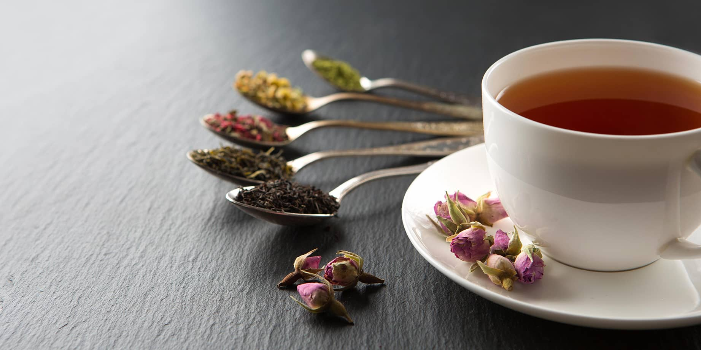

Return to Home
Tea: The Drink of Peasants and Gods Alike

It's hard to choose when we have so many tea!
A popular beverage enjoyed both hot and cold, famously enjoyed in Asiatic countries and in Britain.
Ingredients and Tools:
- Your choice of tea (bagged)
- Hot water
- Cup
- OPTIONAL: Milk and sugar
Steps:
- Begin the process of boiling water
- Place cup on flat surface
- Place tea bag in cup
- Once water is up to temperature, pour water over teabag in cup
- Wait until tea has steeped for 3-5 minutes
- Remove teabag to stop the brewing process
- Add sugar and cream to taste and mix with a spoon
- Enjoy!